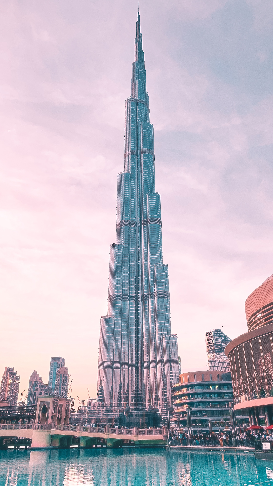
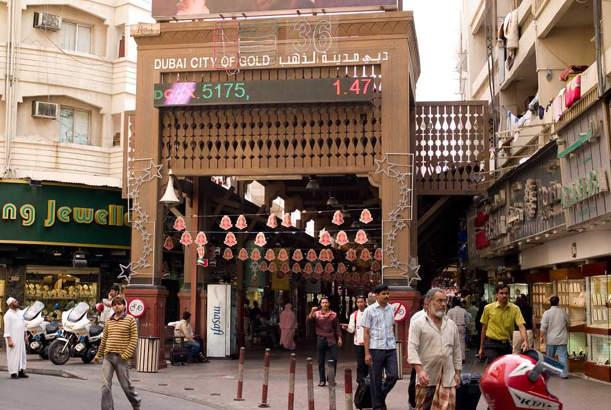
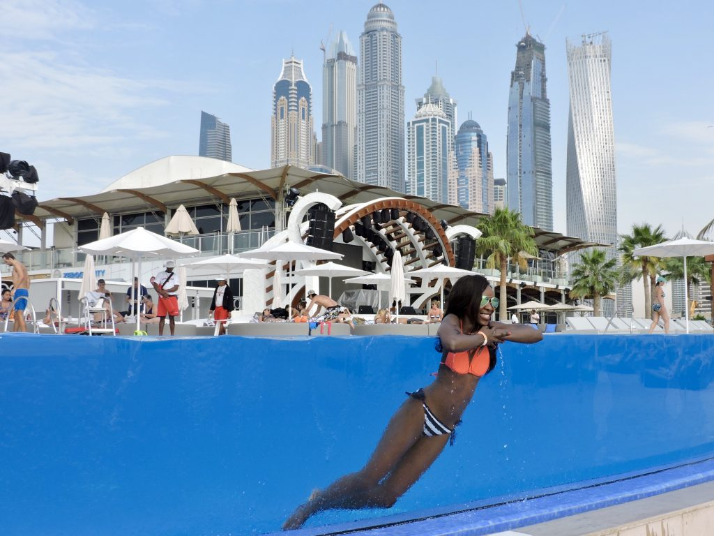
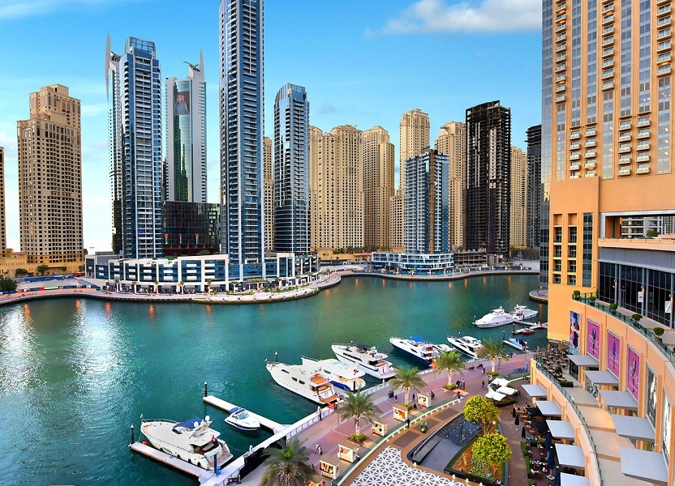

¿Qué saber antes de ir a los Emiratos Árabes Unidos de vacaciones?
Echa un vistazo al visado, principales atracciones, divisa y cultura.
El Visado
La entrada y salida a UAE es libre para los ciudadanos españoles que desean viajar a los Emiratos Árabes Unidos por vacaciones. Aun así, se recomienda obtener una visa a su llegada a los aeropuertos de UAE. Esta visa es gratuita y permite una estancia de hasta 90 días en un período de 180 días. Es fundamental tener un pasaporte válido por al menos seis meses desde la fecha de entrada al país.
01
¿Qué hacer en UAE?
Los Emiratos Árabes Unidos (EAU) es un conjunto de siete emiratos que se unen para formar una federación en el sureste de la Península Arábiga. Con su impresionante mezcla de rascacielos ultramodernos y desiertos inmaculados, es un destino que encapsula la esencia del lujo, la cultura y la aventura.
- Dubai: uno de los emiratos más populares, es conocido por el Burj Khalifa, el edificio más alto del mundo, y por el impresionante centro comercial Dubai Mall. Aquí, el lujo y la innovación se encuentran en cada esquina, desde las Islas Palm Jumeirah hasta el espectáculo de fuentes danzantes.
- Abu Dabi: la capital, alberga la majestuosa Mezquita Sheikh Zayed, un deslumbrante monumento blanco que se erige como símbolo de la arquitectura y el arte islámicos. El museo Louvre Abu Dhabi, con su diseño arquitectónico vanguardista, presenta una colección artística que abarca civilizaciones y culturas de todo el mundo.
- Sharjah: reconocido como la capital cultural de los EAU, es hogar de numerosos museos y galerías. Mientras que Ras Al Khaimah ofrece una combinación de playas, desiertos y montañas, siendo el Jebel Jais su punto más alto y un lugar perfecto para el senderismo.
Para aquellos que buscan una experiencia auténtica del desierto, el Rub' al Khali o el "Cuarto Vacío", es un mar de dunas de arena roja que se extiende hasta donde alcanza la vista. Aquí, se pueden realizar safaris en el desierto, paseos en camello y disfrutar de noches bajo un cielo estrellado.
En los EAU, cada emirato tiene su propio encanto y carácter, desde las dunas doradas de Al Ain hasta las costas cristalinas de Fujairah. Ya sea que busques la opulencia de Dubái, la rica historia de Sharjah o la naturaleza impresionante de Ras Al Khaimah, los EAU tienen algo que ofrecer a cada viajero. ¡Ven y descubre este mosaico de maravillas en el corazón del Golfo!

Dubai Mall
El Dubai Mall es mucho más que un centro comercial; es un destino de entretenimiento y lujo en el corazón de Dubái. Con más de 1.200 tiendas, es uno de los centros comerciales más grandes del mundo, ofreciendo una selección inigualable de marcas de lujo y boutiques de alta gama.
Pero las compras son solo el comienzo. El mall alberga el acuario y zoológico subacuático de Dubái, donde los visitantes pueden maravillarse con miles de especies acuáticas.
Para los amantes del arte, hay una pista de patinaje sobre hielo y las impresionantes fuentes danzantes, que ofrecen espectáculos diarios al ritmo de la música. Cada rincón del Dubai Mall promete sorpresa y asombro.
EL Dubai Mall ofrece desde gastronomía de clase mundial hasta entretenimiento sin fin, es un lugar imprescindible para cualquier turista que visite esta metrópoli deslumbrante. ¡Una experiencia que no te puedes perder!
Burj Al Arab
El Burj Al Arab, conocido como "la vela" debido a su icónica forma, es uno de los hoteles más lujosos y reconocidos del mundo, y un símbolo emblemático de Dubái. Elevándose a 321 metros sobre una isla artificial, su silueta majestuosa domina el horizonte de la ciudad. Su opulencia se refleja en cada detalle, desde su helipuerto hasta las suites de dos pisos adornadas con oro y mármol. Además de su arquitectura impresionante, el Burj Al Arab es célebre por su servicio inigualable, ofreciendo a sus huéspedes experiencias únicas como traslados en Rolls Royce y cenas gourmet en su restaurante submarino. La terraza con vistas panorámicas al Golfo Pérsico y su lujoso spa hacen que la estancia sea aún más especial. Sin duda, el Burj Al Arab representa la quintaesencia del lujo y la grandeza en el corazón de Dubái. ¡Una maravilla que hay que ver!


Burj Khalifa
El Burj Khalifa no es solo un rascacielos, sino un testimonio de lo que la ambición humana puede alcanzar. Elevándose a 828 metros, este coloso de acero y vidrio se alza como el edificio más alto del mundo en el vibrante corazón de Dubái. Desde su mirador "At The Top", ubicado en el piso 148, se pueden apreciar vistas panorámicas impresionantes de la ciudad, el desierto y el océano. Pero el Burj Khalifa es más que una maravilla arquitectónica; es un centro cultural y de entretenimiento. En su base, las Fuentes de Dubái bailan al ritmo de la música, ofreciendo un espectáculo inolvidable. Dentro, el lujo y la innovación se combinan en residencias, oficinas y el lujoso Hotel Armani. El Burj Khalifa no es solo un lugar para visitar, sino una experiencia que encapsula la esencia de la moderna Dubái. ¡Simplemente imprescindible!
Dubai Gold Souq
El Dubai Gold Souq, es un fascinante laberinto de callejuelas repletas de tiendas que deslumbran con sus despliegues de oro y joyería. Situado en el histórico distrito de Deira, este souq es un testimonio de la rica tradición mercantil de la ciudad. Aquí, los visitantes pueden encontrar desde intrincados diseños árabes hasta joyas modernas, todo en una deslumbrante variedad de oro amarillo, blanco y hasta rosa. Pero no solo es oro lo que brilla aquí; también hay una impresionante selección de diamantes, esmeraldas y otros gemas preciosas. Negociar es una parte esencial de la experiencia, y con habilidad, se pueden obtener excelentes ofertas. Sumergirse en el ambiente vibrante del souq, con su mezcla de culturas y aromas de especias cercanos, es viajar al corazón palpitante de la tradicional Dubai. Los más atrevidos pueden meterse en las entrañas de estas callejuelas para encontrar tesoros escondidos en los lugares menos esperados.


Zero Gravity Club
Zero Gravity Dubái es un oasis de diversión y lujo situado a la orilla de la playa, donde el cielo se encuentra con el mar. Con vistas panorámicas al emblemático skyline de Dubái por un lado y al vasto océano por el otro, este club de playa y restaurante ofrece una experiencia única. Durante el día, los visitantes pueden relajarse en su impresionante piscina con bordes infinitos o disfrutar del sol en la playa privada. Al caer la noche, Zero Gravity se transforma en un vibrante club nocturno con DJs internacionales que animan la fiesta. Además, su restaurante ofrece delicias culinarias que satisfacen todos los paladares. Sin olvidar la zona de saltos en paracaídas, donde los más aventureros pueden experimentar la emoción de volar. Zero Gravity combina lo mejor del entretenimiento, relax y gastronomía, haciendo de él un punto de visita esencial en Dubái para turistas. ¡Una experiencia inolvidable!
Dubai Marina
La Marina de Dubái es un deslumbrante microcosmos de vida urbana moderna, donde rascacielos futuristas se reflejan en las aguas azules del canal artificial. Esta zona es una mezcla vibrante de residencias de lujo, restaurantes sofisticados y paseos escénicos. El Paseo de la Marina invita a los visitantes a caminar o a disfrutar de un café al aire libre mientras admiran los yates anclados. Por la noche, el lugar cobra vida con luces brillantes y una energía palpable. No te pierdas un paseo en barco para ver la Marina desde el agua, una perspectiva completamente diferente. Cerca, la playa JBR ofrece un espacio perfecto para relajarse con vistas al Golfo Pérsico. La Marina de Dubái no solo simboliza el lujo y la modernidad, sino que también ofrece una amplia gama de actividades y entretenimientos. ¡Un rincón imprescindible en cualquier visita a Dubái!

02
¿Qué tener en cuenta al viajar a estos paises?
1. Pasaporte
2. Visa.